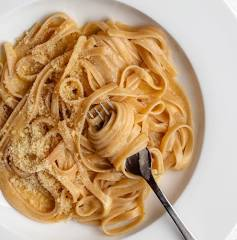

Fettuccine Alfredo is a rich, creamy Italian-American pasta dish known for its simplicity and luxurious texture. While the original Italian recipe focuses on the emulsification of butter and cheese, the popular creamy version uses heavy cream as a base.
Pasta: 1 lb Fettuccine (dried or fresh). Butter: 1/2 to 1 stick (4-8 tbsp) unsalted butter. Cheese: 1 to 2 cups fresh grated Parmesan or Parmigiano-Reggiano. Cream: 1 cup heavy cream or heavy whipping cream. Flavorings: 1-2 cloves garlic (minced) and salt.
boil 1 lb of fettuccine in salted water until al dente, reserving 1 cup of pasta water. Melt 1 stick of butter in a skillet, add 1-2 cups heavy cream, simmer for 2-3 minutes, then stir in 2 cups freshly grated Parmesan, stirring until smooth. Combine pasta and sauce, adding pasta water to thicken.
